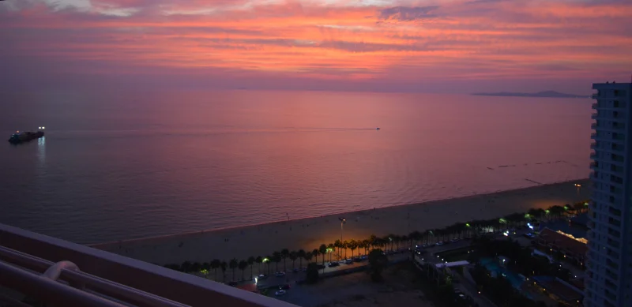

How much is health insurance Thailand
It is cheaper than you would expect and far better than I ever imagined.
Thailand Health Insurance
When I first moved to Thailand I was 59 years old. In America, I left my sales job at a big company and began working for myself. I ran my own small business for about 15 years.
When I left the company I worked at,I was offered COBRA (an extension of health benefits after employment) but the cost was going to be almost $6,000 per month. This was clearly out of the question as my new monthly income was $0. Even if my new income was really good, 6,000 per month is ridiculous.
Prior to becoming self employed, I had always worked for a big company and my health insurance came from work. I naively assumed that once I became self employed I would simply go out and get myself some health insurance off the the open market.
All of the plans available to me as an individula were far to expensive and had large deductibles. They also seemed to have a lot of things they simply did not cover. So I did not get health insurance. For the first time in my life I had no health coverage. I wont lie, I had great anxiety about this. Yet, there were not good options.
This is probably the point where I should tell you that in all my life I have been to the doctor once. I am also and physically fit, eat right and drink very little alcohol. I have no pre existing conditions and take no medicine. Basically I am in excellent shape. I stupidly thought that I would be able to get health insurance for a reasonable price because of my health history. Even when Obama Care came into existence there were no good options for me.
I spent the next 15 years without health insurance.

Health insurance In Thailand for foreigners
I tend to have a certain amount of anxiety about new things. At age 59 I moved to Thailand and began seriously exploring health insurance options.
I quickly came across an insurance plan that many expats had and also met the insurance requirements of immigration. Pacific Cross with 3,000,000 Bhat coverage. I am sure there are other plans, this is the one that came up most often in conversation.
Health insurance for expats In Thailand
Most people you meet in Thailand - foreigners - will readily talk to you about what health insurance they have. It is important to get one that meets the requirements of immigration.
Best health insurance Thailand expat - My opinion
I discovered that most expats had one type of health insurance in Thailand and that was Pacific Cross. I ended up even watching a youtube video that covered Pacific Cross in Thailand. In the video they interviewed the owner of an insurance office not far from where I lived. I got myself a taxi and went on over.
I sat with the owner for a while discussing Thailand and health insurance, specifically Pacific Cross.
The Brokerage is Macallan Insurance Broker Co., Ltd. address is 63/14-15 M. 10 T. Nongprue, A. Banglamung, Chonburi 20150 Thailand (this is in middle of Pattaya fyi)
The owner, Mr. Macallan told me about his own medical history while in Thailand and he has gone through some incredibly serious things medically. Like some of the most serious things you can have happen to you (details of his story are his to tell not mine). He told me that the plan he has is the plan I was considering and that the same plan also met the immigration requirements for the Thailand Retirement Visa. It is the plan most expats get.
His health care plan covered all his very serious and expensive medical treatments and care with 0 deductible. I found this hard to believe, but it also matched what people at cafes told me. I basically do not trust anyone. I do not believe what people tell me and I am always looking out for scams and traps. After our meeting I went about trying to confirm all the information> After a while, everything seemed to line up. So I returned and signed on the line for the insurance.


Cost of health insurance In Thailand for expats
There is only one insurance plan I can reasonably speak on, and that is the one that I got for myself. Pacific Cross Thailand.
In 2024 I got health insurance from Mr. Macallan. I got the Pacific Cross Plan. It gives me 3,000,000 Bhat coverage per visit to the hospital and the deductible is 0. (fyi 3 million is huge, this is an enormous amount per visit) In essence this plan would cover me fully for everything and I would not have to pay any money out of pocket unless costs are over 3,000,000 Bhat, which again, is a very, very high number here in Thailand.
Jomtien Hospital is not far from the office of Mr. Macallan so I rode a taxi (about $2 USD) over to the hospital. I went to the front desk/ check in and asked the lady about the health insurance and if it was as good as I think it is. While her English was not perfect I got the idea from her that I would be very happy with the insurance and that she considered it to be outstanding. She also told me off the record like, that she has never seen a patient pay money. That the insurance covered everything.
Now, is she correct? Is she telling the truth? Who knows. But I felt like this was the most I could do to ensure I got what I needed and wanted. Over the last 12 months I continued to ask other expats about Pacific Cross and all have continued to agree it is outstanding.
If there is a down side to the insurance it is that it does not cover pre existing conditions and it does not cover what they consider stupid risky things you do. For example, if you are injured bungie jumping, or para sailing or rock climbing, chances are you will be denied. For normal life and living you are covered.
Can foreigners buy health insurance in Thailand?
Absolutely. At age 59 I signed the papers and waited about a week to get my coverage. My costs were and upfront 50,580 Bhat. In 2024 that came to about $137 / month. I was also told that if I did not use the coverage during that 12 month period my cost for the second year would go down 10%.
I just renewed my insurance the other day for the second year. My cost was 49,163 Bhat. That is about $113 / month. In addition, if I do not use it during this 12 month period the next year I will get another 5% discount.
This is the point in the story where I tell you how amazed I am. I find that for the first time in my life I am genuinely excited about health insurance. It is such a weird feeling. I am thrilled, happy and want to tell the world about this. Such a weird thing.
Also weird, and something that I have not come to grips with yet is a simple fact. I, as a proud American cannot get good health insurance in America at a fair price. (remember I am in outstanding shape, no pre existing conditions and take no medicine).
I have to come to Thailand to get health insurance at a fair price. If I were sick and going to doctors all the time I would expect my costs to be high. Why is American health insurance so expensive when I am in great shape and unlikely to use the insurance?
Health insurance Thailand over 60
With Pacific cross you want to get the insurance as young as possible. Now I am 60. My costs as the same as when I was 59. The price (at least as of 2025) is in some way related to the initial year you get the insurance.
Health insurance Thailand over 70
I dont know the details of the plan really, but conversation with other people who have the same plan lends me to believe that this is outstanding coverage.
How does this story end? Well it end with me being happy and me being protected and me knowing that whatever money I have saved will go to my kids and not to insurance companies.
Thailand is not perfect, but it is close.
Lets touch first upon things that are not perfect in Thailand.
Immigration is difficult and exhausting | Occassionally I have the real need to feel cold | January to the end of March the air pollution is simply horrible | Many visitors want to ride motorbikes. Thai people know there are laws regarding traffic but it is common to totally ignore those laws and do what you want. For example driving the wrong way down a one way road is normal. | Sometimes during bad storms the power will go out for a few hours | Also, an unxpected negative in Thailand is if you are a Type A person that is always go go go. You will likely struggle. There is no hurry and get things done. If you have a checklist of things to do, throw it away you are not getting it done. Things move slow here and often at most, I can do one thing in a day and even that takes a long time. Going to the bank can be a two hour event, after which, I will be exhausted. I see people lose their patience with this sort of thing. A good example of the slowness and patience of Thai people is that in several years of living here I have never seen one person get angry driving. There appears to be no road rage at all, even in crazy, heavy difficult, insane traffic.
Now things that make Thailand close to perfect.
Sunshine makes me happy | Safety from crime | Friendly people | Outstanding health insurance at a cheap price - I pay $110 per month and it is really good insurance. | Low cost, high quality food | I can live on the beach, I cannot do that in America | I no longer drive - saves me a lot of money | A stress free life | I live at what is basically a resort and go to the pool every day | I no longer need to work | I walk on the beach most days. | When my friends back home ask me what I do every day, I enjoy telling them - Not much | I dont spend money on much of anything therefore the stree of wondering if I have enough money for retirement is gone.
I never really expected Thailand to make me so happy.
Lovely Places In Thailand
- Things To Do In Bangkok
- Elephant Sanctuaries
- Bangkok to Phuket
- Bangkok to Chiang Mai
- Bangkok to Koh Samui
- Bangkok to Pattaya
- Bangkok to Cawuhao
- Bangkok to Ayutthaya
- Bangkok to Koh Lipe
- Bangkok to Koh Larn
- Bangkok to Koh Chang
- Bangkok to Hua Hin
- Bangkok to Koh Phangan
- Bangkok to koh kood
- Bangkok to koh samet
- Bangkok to Krabi
Interesting but Less Lovely
-
Walking Street Pattaya
We can inspect your furnace. Regular maintenance and inspection of your furnace can help prevent safety issues, such as the risk of fire, and the dangers posed by unhealthy gas fumes, and lethal carbon monoxide leaks. -
Retirement Visa / Thai Bank Account
We’re pleased to serve both residential heating customers in Shomish County and are prepared to help you with service and installation of your furnace and heating system. -
Air Pollution
When the cold weather sets in for the winter, you want to know that you have a top of the line heating system in place to keep you warm no matter what’s going on outside. With Honest Heating that’s exactly what you’ll get./span> -
How Much Is Health Insurance In Thailand?
Medical insurance in Thailand is generally very low cost for very high quality. Mine costs $120 per month and I am age 60. Zero deductible.
Is Thailand Safe?
-
The short answer is Yes!
There is crime in Thailand but it is dramatically less than crime than in other countries. So much less, that it feels as if there is no crime in Thailand. I can walk around in Pattaya or Bangkok with my money and passport on me and have no worry about being robbed. People here generally do not commit crime for the simple reason that crime is wrong.
Violent crime and robbery does exist, but generally you need to be very foolish with your behavior to experience it. I read an article a while back about a 70 year old man who was robbed near Walking Street Pattaya. Reading the details, you understand quickly that this old man was very foolish. Walking Street is a dirty part of town filled with prostitution, bars and drunks. It is a magnate for unhealthy people. The old man was alone at 3 a.m., drunk and flashing cash.
A quick note regarding scams: Trying to get you to pay too high a price for something is not generally considered a crime or bad. If something costs 100 and you pay 1000 for it. That is “shame on you” for not know what the price should be.
Helping with your plumbing needs
- Fix Leaks
- Web Design
- Photography
- 50GB Storage
- Endless Support
100% Satisfaction Guarantee - Heating, Cooling, HVAC, Furnace Installation, Furnace Repair, Heat Pumps, Gas Furnace, Electric Furnace, and Radiant Heat.